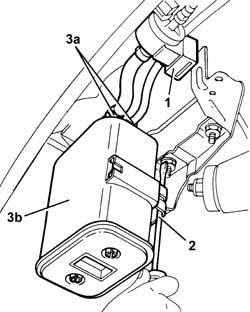
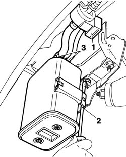
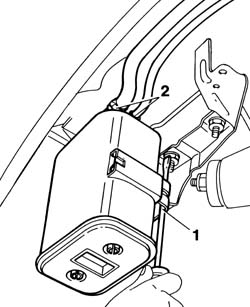
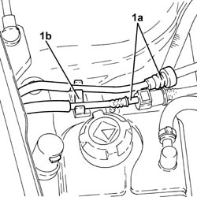
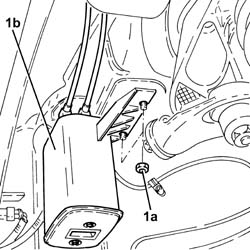

1080E20 active carbon filter for fuel vapours - r + r
- Path
- Procedures > 10 ENGINE > 1080 EXHAUST EMISSION CONTROL SYSTEM > 1080E evaporation control system > 1080E20 active carbon filter for fuel vapours - r + r
- Kind
- repair procedure (removal / refitting; the operation number is the code)
- Applies to
- engines: 1.6 TS , 1.8 TS, 2.0 JTS, 2.5 V6, 3.2 V6, 2.0 JTS; all production periods
- Interactive page
- https://sloeber94.github.io/elrnDB-a156/en/#/3237597
Applies to: engines: 2.5 V6, 3.2 V6; all production periods
 Removing
Removing
 Refitting
RefittingPosition the vehicle on the lift.
Disconnect the battery negative (-) terminal.
 | Name | Connector |
|---|---|---|
- | Battery |
4450B10 Front WHEEL (one) - R.R.
7055B64 Engine compartment DUST shield in front wheel arch (one), left or right - R.R.
5550C22 l/h or r/h side flasher (one) - r+r
1. Remove the fuel vapour cut out valve from its housing.
2. Use a screwdriver for leverage as shown in the diagram to release the active charcoal filter from the mounting bracket.
3. Disconnect the fuel vapour inlet and outlet pipes (3a) and remove the active charcoal filter.

Applies to: engines: 2.5 V6, 3.2 V6; all production periods
Refitting
RemovingConnect the fuel vapour inlet and outlet pipes to the active charcoal filter.
Fix the active charcoal filter using the mounting bracket.
Place the fuel vapour cut out valve back in its housing.
5550C22 l/h or r/h side flasher (one) - r+r
7055B64 Engine compartment DUST shield in front wheel arch (one), left or right - R.R.
4450B10 Front WHEEL (one) - R.R.
Connect the negative (-) battery terminal.
Remove the vehicle from the ramp.
Applies to: engines: 1.6 TS , 1.8 TS; all production periods
Removing
Refitting4450B10 Front WHEEL (one) - R.R.
7055B42 Additional FRONT WHEEL ARCH (one), left or right - R.R.
Applies to: engines: 1.6 TS ; all production periods
1. Remove the fuel vapour cut out solenoid valve from the fixing on the bodyshell.
2. Use a screwdriver for leverage and remove the active charcoal filter from the mounting bracket.
3. Disconnect the pipes from the active charcoal filter, then remove it.

Applies to: engines: 1.6 TS ; all production periods
1. Use a screwdriver for leverage and remove the active charcoal filter from the mounting bracket.
2. Disconnect the pipes from the active charcoal filter, then remove it.

Applies to: engines: 1.6 TS , 1.8 TS; all production periods
Refitting
RemovingConnect the pipes to the active charcoal filter and fix them using the bands.
Fix the active charcoal filter to the mounting bracket.
Applies to: engines: 1.6 TS ; all production periods
Place the fyuel vapour cut valve back in its housing and fix it to the support.
Applies to: engines: 1.6 TS , 1.8 TS; all production periods
5550C22 l/h or r/h side flasher (one) - r+r
7055B42 Additional FRONT WHEEL ARCH (one), left or right - R.R.
Applies to: engines: 2.0 JTS, 2.0 JTS; all production periods
Removing
RefittingPosition the vehicle on the ramp.
1. Disconnect the rapid attachments (1a) of the fuel vapour inlet and outlet pipes from the active charcoal filter and release them from the band (1b).

Applies to: engines: 2.0 JTS, 2.0 JTS; all production periods
Proceed with removal 4450B04 right front wheel r r .
Proceed with removal - 7055B91 Right front WHEEL ARCH LINER - R.R. .
1. Undo the nuts (1a) and remove the active charcoal filter (1b) with the integrated pipes.

Applies to: engines: 2.0 JTS, 2.0 JTS; all production periods
Refitting
RemovingRefit in its seating the active charcoal filter with integrated pipes and secure it with the nuts.
Proceed with refitting - 7055B91 Right front WHEEL ARCH LINER - R.R. .
Proceed with refitting 4450B04 right front wheel r r .
Connect the rapid attachments of the fuel vapour inlet and outlet pipes from the active charcoal filter and secure them to the band.
Remove the car from the ramps.
Topics linked from this page (6)
- 4450B04 right front wheel r r
- 4450B10 Front WHEEL (one) - R.R.
- 5550C22 l/h or r/h side flasher (one) - r+r
- 7055B42 Additional FRONT WHEEL ARCH (one), left or right - R.R.
- 7055B64 Engine compartment DUST shield in front wheel arch (one), left or right - R.R.
- A1 Battery